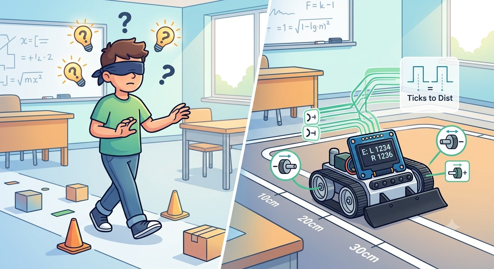
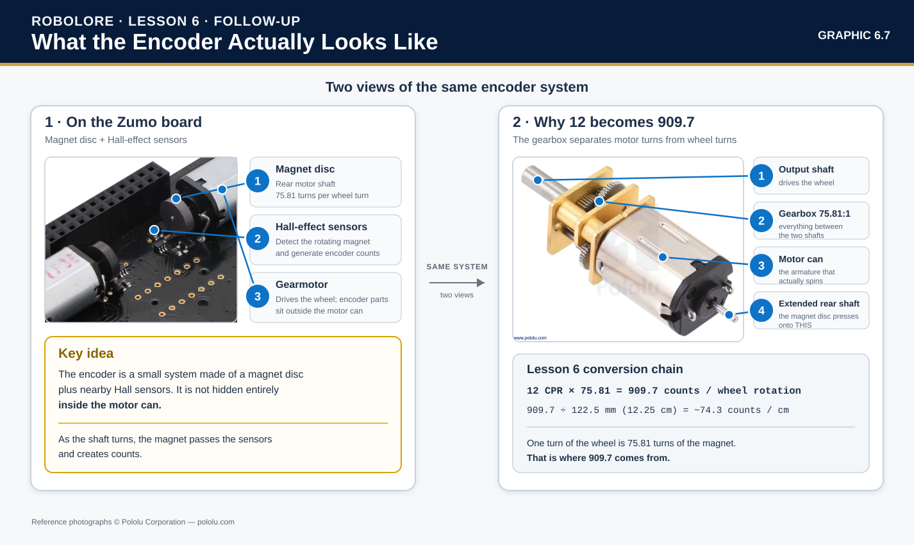
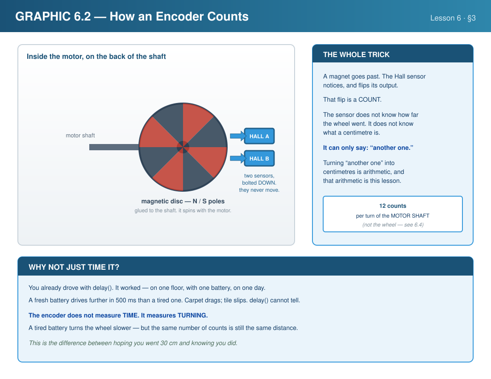
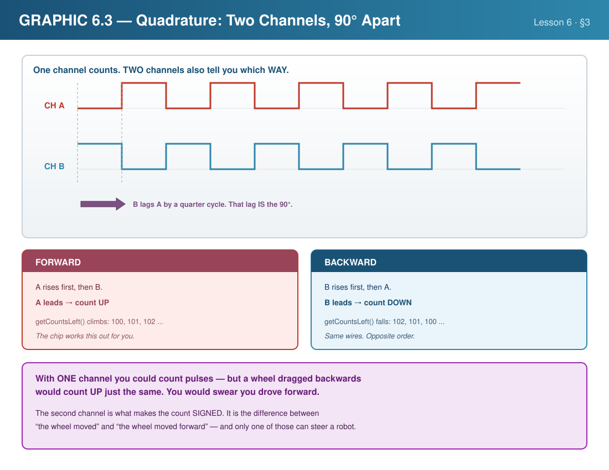
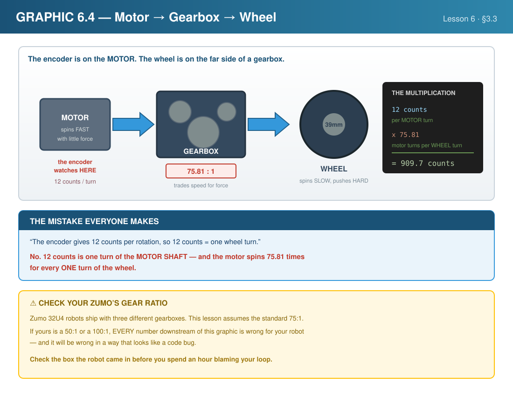
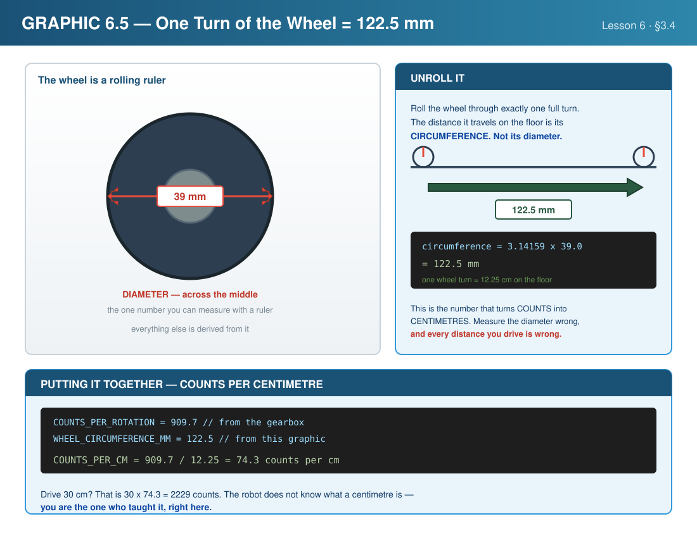
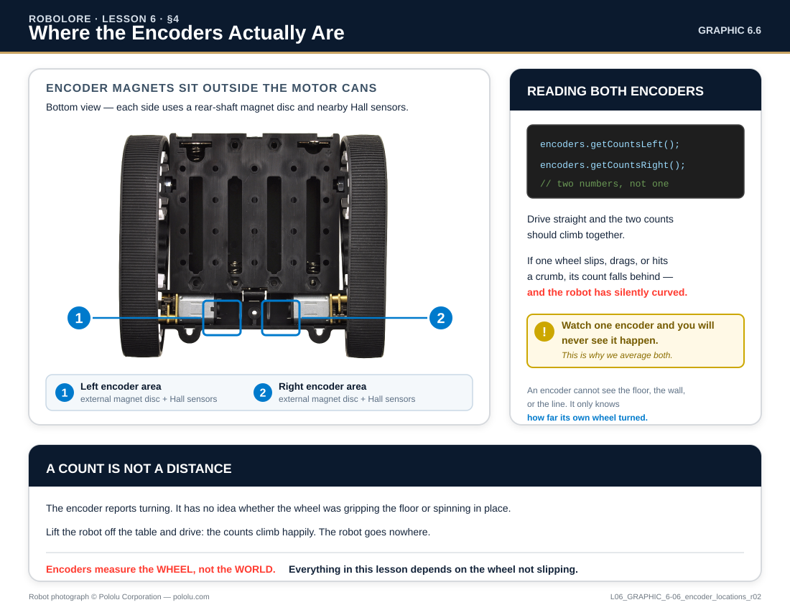
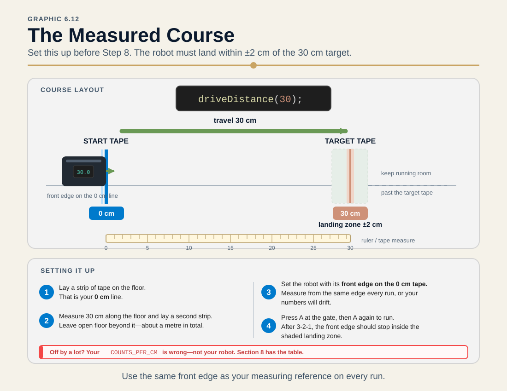
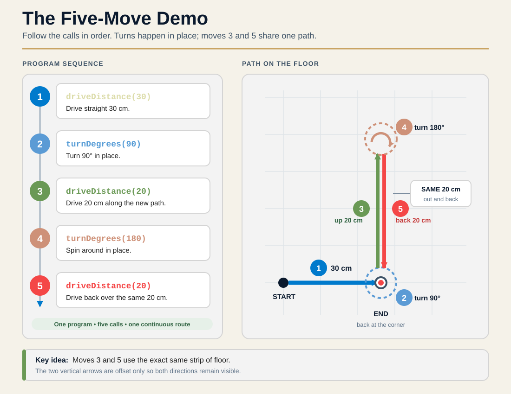
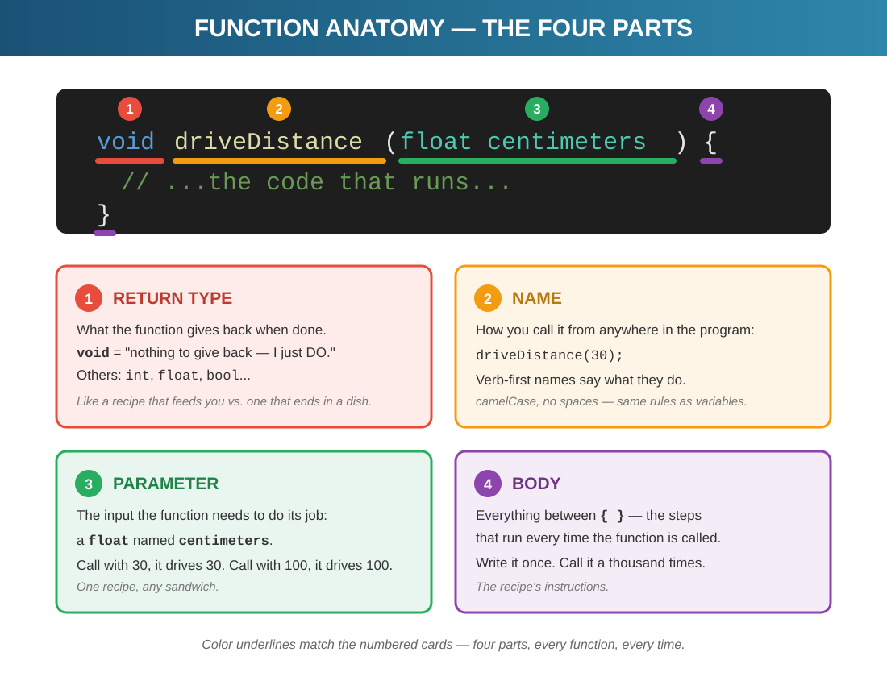

Imagine trying to walk to your friend's house blindfolded. Without being able to see, how would you know when to stop? You might count your steps: "100 steps to the corner, turn right, then 50 more steps to their door."
That's exactly what your Zumo has been doing—driving blind! When we wrote motors.setSpeeds(200, 200) followed by delay(2000), we were essentially saying "walk for 2 seconds and hope you end up in the right place." But what if the batteries are low? What if one wheel slips?

Driving without encoders is walking blindfolded — you guess, and you hope. Encoders let the robot count its way instead.
Encoders are everywhere:
Today, you'll give your Zumo the ability to measure its own movement!
By the end of this lesson, you will be able to:
The Zumo 32U4 uses magnetic encoders—sensors that count wheel rotations using Hall effect sensors:

The real thing. That black hub on each motor shaft is the magnetic disc. The small board beside it carries the Hall effect sensors. Nothing touches — the sensors read the magnetic field straight through the air as the disc spins.

Think of it like a turnstile counting people at a stadium. Each person passing through = one count. Each magnetic pole passing the sensor = one count. More counts = more rotation!
How does the encoder know if the wheel is spinning forward or backward? Quadrature encoding uses TWO sensors (Channel A and Channel B) positioned slightly offset:

Encoder counts assume the wheels don't slip. On smooth floors, the Zumo's tracks help maintain traction, but you may need to calibrate empirically—adjust your constants based on real-world testing rather than relying purely on math.
The Zumo 32U4's encoders produce 12 counts per motor shaft rotation. But there's a 75.81:1 gearbox between motor and wheel:
The math in this lesson assumes the standard 75:1 gear ratio Zumo 32U4.
Zumo robots come in three versions:
| Version | Gear Ratio | Counts per Revolution |
|---|---|---|
| High Speed | 50:1 | ~600 |
| Standard (Ours) | 75:1 | ~910 |
| High Torque | 100:1 | ~1,200 |
Not sure which one you have? Take the batteries out and look inside the battery compartment: there is a colored sticker on the underside of the main board, and the colour is the gear ratio (Lesson 3, Section 4.2). Using the wrong ratio = wrong distance calculations — every number below depends on it.

Here's the key insight: because wheels have a fixed size, counting rotations lets us calculate exactly how far the robot moved.
Think about it: if a wheel is 39mm across, it travels exactly 122.5mm every time it completes one rotation. That never changes! So if the encoder counts 909.7 "ticks" (one full wheel rotation), we KNOW the robot moved 12.25cm. Count twice as many ticks? The robot moved twice as far. It's that simple.
The Zumo's wheels are 39mm diameter. Using circumference = π × diameter:
Circumference = π × 39mm = 122.5mm per rotation
Counts per cm = 909.7 ÷ 12.25cm = 74.3 counts/cm
To drive 30 cm: 30 × 74.3 = 2,229 encoder counts

For turns, we use the wheel base (distance between wheel centers) = 85mm
The 85mm wheel base is approximate. For best accuracy, measure the distance between your robot's wheel centers and adjust the constant in your code. Even small differences affect turn accuracy!
When turning in place, each wheel traces a circle with the wheel base as diameter:
Turn circumference = π × 85mm = 267mm for a full 360°
Counts per degree ≈ 5.5 counts
| Open-Loop (Before) | Closed-Loop (Now!) |
|---|---|
| "Run motors for 2 seconds" | "Run motors until encoders show 30cm" |
| No feedback — hope for the best | Continuous feedback — know when to stop |
| Affected by battery level, floor surface | Self-correcting regardless of conditions |
| Inconsistent results | Precise, repeatable movement! |
Great news—you don't need to add any hardware! The Zumo 32U4 has magnetic encoders built into the motors.

| Property | Value |
|---|---|
| Counts per motor rotation | 12 CPR |
| Gear ratio | 75.81:1 |
| Counts per wheel rotation | 909.7 |
| Wheel diameter | 39mm |
| Wheel circumference | 122.5mm |
| Wheel base | 85mm |
| Counts per cm | ~74.3 |
| Counts per degree (turning) | ~5.5 |
Unlike line sensors or proximity sensors, encoders do NOT require initialization! They start counting automatically when the robot powers on.
LastName_L06 folder into Documents/PlatformIO.No internet? Copy your ZUMO_Template, rename it LastName_L06 by hand — and paste in the STANDARD HELPERS block from a Lesson 4 or 5 project (the Maker adds it automatically; the plain template doesn't have it).
Scroll to the bottom of the fresh main.cpp before you move on. The STANDARD HELPERS block is there again — waitForStart() and checkBattery(), plus their two lines up in FUNCTION PROTOTYPES. Today the robot drives itself for the first time, so the safety gate stops being a formality: nothing moves until you press A, every single run.
You'll build progressively—adding capabilities one at a time with testable milestones:
| Steps | What You Add | Robot Can Now... |
|---|---|---|
| 1–2 | Maker project + hardware objects | Compile successfully |
| 3–4 | Dashboard function + gate wiring | 🎉 Show live encoder counts (push test)! |
| 5–6 | Distance constants + conversion | 🎉 Display distance in cm! |
| 7–8 | Speed constant + driveDistance() + test | 🎉 Drive exact distances! |
| 9–10 | Turn constants + turnDegrees() BLUEPRINT | 🎉 Turn precise angles! |
| 11–12 | Turn test + full navigation demo | 🎉 Navigate complex patterns! |
| 13 | TRIM + averageCounts() | 🎉 Squares that actually close! |
Actually test at each 🧪 milestone! Don't just read and move on. Each milestone builds confidence that your code works before adding complexity.
| Function | What It Does |
|---|---|
getCountsLeft() | Returns current left encoder count (keeps counting) |
getCountsRight() | Returns current right encoder count (keeps counting) |
getCountsAndResetLeft() | Returns count AND resets to zero |
getCountsAndResetRight() | Returns count AND resets to zero |
Use getCountsAndReset...() at the START of a movement to begin counting from zero. Use getCounts...() to check progress during movement.
Encoders accumulate forever unless you reset them!
If you forget to reset encoders at the start of a new movement, your robot will use the OLD count from previous movements. This causes bizarre bugs like:
Rule: ALWAYS call getCountsAndResetLeft() and getCountsAndResetRight() at the START of every new movement function.
for loop from Lesson 4 . Both repeat — but they answer different questions, and this lesson needs the one you have not met yet.Every function you are about to build has the same heart: start the motors, then wait until the encoders say you have gone far enough. That waiting is a while loop, and it is the tool you have been missing. A for loop repeats a known number of times — once per sensor, eight times, three. A while loop repeats as long as something stays true, however many times that turns out to be. You do not know in advance how many 10-millisecond checks it takes to roll 30 cm; you only know when to stop.
while (condition is still true) { // do this, then check the condition again }
The order is the whole idea, and it is worth walking once: check the condition; if true, run the body once; then go back and check again; keep going until the check finally comes back false; then move on to whatever is below the closing brace. Here is the exact loop at the centre of driveDistance(), the function you write in Step 7:
motors.setSpeeds(speed, speed); // start rolling while (abs(encoders.getCountsLeft()) < targetCounts) { delay(10); // hold here, re-checking 100x a second } motors.setSpeeds(0, 0); // the count finally reached target — stop
Read it as a sentence: while the distance rolled so far is still less than the target, wait ten milliseconds and look again. The motors were told to run once, before the loop. The loop itself does nothing but watch — and the instant the count crosses the target, the condition turns false, the loop releases, and the very next line stops the robot.
| Question | Reach for… | Because |
|---|---|---|
| "Do this once per sensor / N times." | for | the count is known before you start |
| "Keep going until the robot has driven far enough." | while | the count depends on the world, not on you |
A for loop counts to a finish line on its own. A while loop only stops when its condition goes false — so something inside the loop, or out in the world, has to be able to make that happen. The loop above ends because the wheels turn and the encoder count climbs toward targetCounts. Take that away and the loop runs forever, the robot frozen mid-function with no error and no clue why.
Two ways to build the trap by accident: forget to start the motors before the loop (the count never climbs, so the condition never turns false), or compare against a target the count can never reach. When a robot hangs partway through a move, suspect the while condition first — ask "what in here is supposed to make this false, and is it actually happening?"
Whenever you write a while, before you move on, answer one question out loud: what makes this stop? If you cannot point at the exact thing that turns the condition false, you have written an infinite loop — you just have not run it yet.
abs() and ?:The driveDistance() you are about to write leans on two things you have not been shown outright. Both are small. Both save you from a bug that is nastier than it looks.
abs() — throw away the minus signabs() gives you the absolute value of a number: the number with any negative sign stripped off. abs(-30) is 30; abs(30) is still 30. Think of it as “how far from zero,” direction thrown away.
Here is why the function cannot work without it. You tell the robot to drive -30 — thirty centimetres backward. That distance becomes a target the encoder count has to reach:
// WITHOUT abs — the backward bug int targetCounts = -30 * COUNTS_PER_CM; // a NEGATIVE target while (encoderCount < targetCounts) { ... } // already true — loop never runs, robot never moves
The count starts at 0. A negative target is already below 0, so 0 < targetCounts is false on the very first check and the loop exits before the wheels turn. Wrap the distance in abs() and the target is always a positive number the count can climb to, whichever way the robot drives:
int targetCounts = abs(distanceCm) * COUNTS_PER_CM; // always positive — the count can reach it
You will meet the same trick in Step 13, where abs() on each wheel's change keeps a distance measurement positive no matter which way a wheel rolled.
?: choice — an if that hands back a valueThe direction still has to come from somewhere: forward means +DRIVE_SPEED, backward means -DRIVE_SPEED. You could write that as a four-line if. C++ gives you a one-line form built for exactly this — picking one of two values:
int speed = (distanceCm > 0) ? DRIVE_SPEED : -DRIVE_SPEED;
Read it as a question and two answers, in that order: is distanceCm greater than 0? If yes, use DRIVE_SPEED; if no, use -DRIVE_SPEED. The ? holds the question, the : separates the yes-answer from the no-answer. It is the same decision an if/else makes — the difference is that this one produces a value you can drop straight into a variable, instead of running blocks of code. The whole thing above is identical to:
// the same choice, the long way int speed; if (distanceCm > 0) { speed = DRIVE_SPEED; } else { speed = -DRIVE_SPEED; }
Reach for ?: only when you are choosing between two values for one variable, as here. For anything longer, the full if/else is clearer — and clarity beats brevity every time someone has to read your code later, including you.
If ?: makes your head hurt on a given line, write the if/else instead — it compiles to the same thing and the robot cannot tell the difference. The one-liner is a convenience, never a requirement.
Your turnDegrees() will take any angle you hand it. The harder question is which angle to hand it — and the intuitive answer is wrong often enough to be worth two minutes now, because several of this lesson's challenges are shapes.
Picture driving a square. At each corner you turn 90°, four times, and you end up facing the way you started. That works, and it makes turning feel obvious. Now try a triangle. Its corners are 60° each — so turn 60° at each corner?
Drive it and the robot wanders off into the room. The shape never closes.
The 60° in a triangle is the interior angle — the angle inside the corner, measured between the two walls. Your robot is not inside the corner. It is driving along one wall and needs to swing onto the next one. That swing is the exterior angle, and it is what is left over: 180° − 60° = 120°.
The square hid this from you. A square's interior angle is 90°, and 180 − 90 is also 90 — the only shape where the two angles are the same number. So the square taught you a rule that happens to be right for exactly one case.
There is a much easier way to think about it that skips interior angles entirely. Drive all the way around any closed shape and you finish facing the direction you began. You have turned one complete circle — 360° — no matter how many corners it took. So share that 360° out evenly among the corners:
Turn at each corner = 360 ÷ number of sides
Check it against shapes you already know:
| Shape | Sides | 360 ÷ sides | Turn at each corner |
|---|---|---|---|
| Triangle | 3 | 360 ÷ 3 | 120° |
| Square | 4 | 360 ÷ 4 | 90° |
| Pentagon | 5 | 360 ÷ 5 | 72° |
| Hexagon | 6 | 360 ÷ 6 | 60° |
The square still comes out 90°, which is why it worked. And notice the pattern: more sides means a gentler turn at each corner. Push it far enough — a hundred sides, turning 3.6° each time — and the shape stops looking like a polygon and starts looking like a circle. That is genuinely how a robot drives a circle in open-loop code.
Write the division in your code rather than the answer — float turnAngle = 360.0 / 5; says why the number is 72 and survives you changing your mind about the shape. A bare 72 is a number nobody can check. Use 360.0, not 360: integer division would throw away the fraction on any shape that does not divide evenly, and a seven-sided shape needs the 51.43 it would silently discard.
Your turns will not be perfect, and the shape will not quite close — that is not a mistake in the math above. Step 13 takes that exact failure apart, and Challenge 1 asks you to watch for it. The formula tells you what to command; the robot decides what it actually does.
That is the reading done. Before you put a single wheel on the floor, answer these five from your head — no scrolling back, no robot, no help. Then click to compare. If your answer and the reveal disagree, the section number tells you where to re-read.
Direction. Channel A triggers before Channel B when the wheel rolls forward, and B before A when it rolls backward — so the order of the two signals says which way it turned. That is why counts are signed: forward adds, backward subtracts, and you get direction free with the measurement instead of having to ask for it separately.
About 909.7. The encoder produces 12 counts per turn of the motor shaft, and a 75.81:1 gearbox sits between the motor and the wheel: 12 × 75.81 = 909.7. The number is a property of your gearbox, not of encoders in general — a 50:1 Zumo reads about 600 and a 100:1 reads about 1,200. Every distance in this lesson rests on getting this one right.
About 74.3. Circumference = π × 39 mm = 122.5 mm, which is 12.25 cm of floor per wheel rotation. So 909.7 counts ÷ 12.25 cm = 74.3 counts per cm. Driving 30 cm is therefore 30 × 74.3 ≈ 2,229 counts.
for loop and a while loop both repeat. What different question does each one answer? (§5.3)A for loop runs a number of times you know before you start — once per sensor, eight times, three. A while loop runs as long as something stays true, however many times that turns out to be. You cannot know in advance how many 10-millisecond checks it takes to roll 30 cm; you only know when to stop. That is a while.
abs() before it becomes a target? (§5.4)Because encoder counts are signed and the target has to be something the count can climb to. Ask for −30 and -30 * COUNTS_PER_CM is a negative target; the count starts at 0, so 0 < targetCounts is already false on the very first check and the loop exits before the wheels ever turn. abs() makes the target positive whichever way the robot is driving, and the direction is handled separately by the sign on the motor speed.
Section 5 showed you the map. Now you build the machine — and for most steps, you write the code yourself: each hands you the plan in pseudo-code and points at the Quick Reference; you translate, then check the reveal.
Discovery steps follow the same pattern:
Three steps break the pattern on purpose: Step 8 and Step 12 are test-harness choreography — countdowns and screen messages you copy, because typing them teaches nothing. Step 10 is a BLUEPRINT — one rung harder than a discovery: comments only, and this time you have a worked example to lean on, because you just built its twin.
The ZUMO Project Maker has a DISCOVERIES menu for this lesson: pick the entry named for the step you're about to start, and it opens a project already built up to that exact point. Missed a day? Broke your file beyond repair? Grab the right entry and keep moving — no shame, no retyping.
Do the Section 4.4 ritual: → make LastName_L06 for me, unzip it into Documents → PlatformIO → Projects, then File → Open Folder. The skeleton arrives with the STANDARD HELPERS pre-installed — waitForStart() and checkBattery() — because today the robot drives itself.
Build (✓) shows SUCCESS before you've written a single line. Every red from here on is something we did — and we'll know exactly when we did it.
Two newcomers join the cast today: the encoders (your robot's trip meters) and the motors they measure. The buttons and display are already in the skeleton.
The plan, in pseudo-code:
cast list → the two encoders, as one object ← new today
both motors, as one object ← they finally move!
(buttonA, buttonB, display: pre-installed)
Now translate it yourself. The declarations are in ⚡ Quick Reference → Hardware objects. Add the two new lines to the HARDWARE OBJECTS section.
// ===== HARDWARE OBJECTS ===== Zumo32U4ButtonA buttonA; Zumo32U4ButtonB buttonB; Zumo32U4OLED display; Zumo32U4Encoders encoders; Zumo32U4Motors motors;
Build (✓). Nothing visible changes — the cast is hired, the script comes next.
Your first helper of the day: displayEncoderCounts(), a live dashboard showing each wheel's raw count. Write it in the HELPER FUNCTIONS section, above the STANDARD HELPERS.
The plan, in pseudo-code:
displayEncoderCounts: 1. read the left count into an int, right count into an int 2. clear the screen, print the title 3. row 2: print "L: " and the left count 4. row 4: print "R: " and the right count
Now translate it yourself. The read-only encoder calls are in ⚡ Quick Reference → Code Recipes, and the cursor moves are in ⚡ Quick Reference → Display.
Then, the prototype trip — solo this time. You have met '...' was not declared in this scope three times now, and three times the lesson walked you through the fix. This is the graduation: add all three of today's prototypes to the FUNCTION PROTOTYPES section yourself, one trip, before the compiler asks — displayEncoderCounts plus the two functions you'll write later this hour, driveDistance(float) and turnDegrees(float). (A prototype without a definition is legal — the promise just has to be kept before anything calls the function.)
/* displayEncoderCounts() ---------------------- Live dashboard: the raw count from each wheel. Spin a wheel by hand and watch its number move. */ void displayEncoderCounts() { int leftCount = encoders.getCountsLeft(); int rightCount = encoders.getCountsRight(); display.clear(); display.print(F("ENCODER COUNTS")); display.gotoXY(0, 2); display.print(F("L: ")); display.print(leftCount); display.gotoXY(0, 4); display.print(F("R: ")); display.print(rightCount); }
// ===== FUNCTION PROTOTYPES ===== void waitForStart(); void checkBattery(); void displayEncoderCounts(); void driveDistance(float distanceCm); void turnDegrees(float degrees);
Build (✓). If it went red with was not declared — you know this one; no walkthrough coming. Fix it and go green.
Wire the dashboard into a running program. The gate stays where it always goes: waitForStart() is the last line of setup(), and checkBattery() tops loop().
The plan, in pseudo-code:
when the robot boots: 1. set the 21x8 screen layout 2. gate at the door — LAST line, always every loop: 1. battery check (hold A + B to see millivolts) 2. redraw the dashboard 3. breathe for 50 ms
Now translate it yourself. Layout and timing calls are in ⚡ Quick Reference → Display and ⚡ Quick Reference → Timing; the two STANDARD HELPERS are already defined at the bottom of your file.
void setup() {
display.setLayout21x8();
waitForStart();
}
void loop() { checkBattery(); displayEncoderCounts(); delay(50); }
Upload — this checkpoint is the push test. Press A, then spin each track slowly by hand: its count climbs on the screen. Push the robot forward and both climb together. You just watched the odometry heartbeat.
Four constants turn raw counts into centimeters. Three are measurements; the fourth is math built from the other three — write the formula, not the answer, and the compiler does the arithmetic.
The plan, in pseudo-code:
constants (CONFIGURATION section): counts per wheel rotation = 909.7 ← from the gearbox wheel diameter = 39.0 mm ← from the ruler wheel circumference = π × diameter counts per cm = counts-per-rotation ÷ (circumference in cm)
Now translate it yourself. The measured values live in ⚡ Quick Reference → Key Values. All four are const float.
// ===== CONFIGURATION ===== // ----- Distance Measurement ----- const float COUNTS_PER_ROTATION = 909.7; const float WHEEL_DIAMETER_MM = 39.0; const float WHEEL_CIRCUMFERENCE_MM = 3.14159 * WHEEL_DIAMETER_MM; const float COUNTS_PER_CM = COUNTS_PER_ROTATION / (WHEEL_CIRCUMFERENCE_MM / 10.0);
Build (✓). Quiet step — the math is loaded, nothing uses it yet.
Upgrade displayEncoderCounts() to show what the counts mean. Replace the whole function body with version 2.
The plan, in pseudo-code:
displayEncoderCounts, version 2: 1. read both counts 2. distance = (average of the two counts) ÷ counts-per-cm 3. rows 0-1: L and R counts 4. rows 3-4: "Distance:" and the cm value, one decimal
Now translate it yourself. Printing a float with one decimal is display.print(value, 1) — it's in ⚡ Quick Reference → Display.
/* displayEncoderCounts() ---------------------- Live dashboard: raw counts plus the distance they add up to, using the COUNTS_PER_CM math from Section 5. */ void displayEncoderCounts() { int leftCount = encoders.getCountsLeft(); int rightCount = encoders.getCountsRight(); float distanceCm = ((leftCount + rightCount) / 2.0) / COUNTS_PER_CM; display.clear(); display.print(F("L: ")); display.print(leftCount); display.gotoXY(0, 1); display.print(F("R: ")); display.print(rightCount); display.gotoXY(0, 3); display.print(F("Distance:")); display.gotoXY(0, 4); display.print(distanceCm, 1); display.print(F(" cm")); }
Upload. Put a ruler on the desk and push the robot exactly 10 cm — the screen should say ~10.0 cm. If it's wildly off, check your COUNTS_PER_CM formula against the reveal.
The flagship function of the lesson: tell the robot a distance, and it drives exactly that far and stops. One new constant first, then the function.
The plan, in pseudo-code:
constant: DRIVE_SPEED = 150 driveDistance(distanceCm): 1. reset both encoders — count from zero 2. target counts = |distance| × counts-per-cm 3. speed = +DRIVE_SPEED forward, -DRIVE_SPEED backward 4. start both motors at speed 5. wait (checking every 10 ms) until |left count| reaches target 6. full stop
Now translate it yourself. The read-and-reset calls are in ⚡ Quick Reference → Code Recipes; motor commands in ⚡ Quick Reference → Motors. Positive-or-negative in one line is the (condition) ? a : b pick — both it and the abs() on the line above are unpacked in Section 5.4, just above.
The target lives in an int, and on this chip an int tops out at 32,767. At ~74.3 counts per cm, that's about 440 cm. Ask for more and the math silently wraps — the robot barely moves, or never stops. Keep single moves under 4 meters. (Observation experiment #4 turns this into a puzzle.)
// ----- Motor Control ----- const int DRIVE_SPEED = 150;
/* driveDistance(distanceCm) ------------------------- Drive a measured distance. Positive = forward, negative = backward. Blocks until the distance is done. (Heads-up: int math caps the target near 440 cm.) */ void driveDistance(float distanceCm) { // Reset encoders to start counting from zero encoders.getCountsAndResetLeft(); encoders.getCountsAndResetRight(); // Calculate target int targetCounts = abs(distanceCm) * COUNTS_PER_CM; // Set direction based on positive/negative distance int speed = (distanceCm > 0) ? DRIVE_SPEED : -DRIVE_SPEED; // Start driving motors.setSpeeds(speed, speed); // Wait until we've traveled far enough while (abs(encoders.getCountsLeft()) < targetCounts) { delay(10); } // Stop! motors.setSpeeds(0, 0); }
Build (✓) — green, but don't upload yet: nothing calls the function, and the test harness comes next step. Robot on the floor before Step 8.
Time to move. This loop is test-harness choreography — press A, count down, drive, report — so it's a copy step. Replace your whole loop():
void loop() { checkBattery(); display.clear(); display.print(F("Press A: 30cm")); buttonA.waitForButton(); // 3-2-1 countdown - hands clear! for (int i = 3; i > 0; i--) { display.clear(); display.print(F("Starting: ")); display.print(i); delay(1000); } display.clear(); display.print(F("Driving 30cm...")); driveDistance(30); display.clear(); display.print(F("Done!")); delay(1000); }
Upload, press A at the gate, then A again for the run: 3-2-1, the robot drives 30 cm ±2 and stops. Measure it with the ruler. Off by a lot? Section 8 has the table.

Set the course up once and leave it down. Measure from the same edge of the robot every run — switch edges halfway through and you will chase an error that was never in your code.
Turning is driving in disguise: when the robot pivots, each wheel traces a circle whose diameter is the wheel base — the distance between the tracks. Three more constants.
The plan, in pseudo-code:
constants (add below the motor section):
wheel base = 85.0 mm ← measure yours!
turn circumference = π × wheel base
counts per degree = (turn circumference ÷ 360)
× (counts per rotation ÷ wheel circumference)
Now translate it yourself. Same const float pattern as Step 5; the values are in ⚡ Quick Reference → Key Values.
// ----- Turning ----- const float WHEEL_BASE_MM = 85.0; const float TURN_CIRCUMFERENCE_MM = 3.14159 * WHEEL_BASE_MM; const float COUNTS_PER_DEGREE = (TURN_CIRCUMFERENCE_MM / 360.0) * (COUNTS_PER_ROTATION / WHEEL_CIRCUMFERENCE_MM);
Build (✓). If your squares in Section 9 come out crooked later, this wheel-base number is the first suspect — measure your own robot.
turnDegrees() has the exact skeleton of the driveDistance() you wrote in Step 7. Two differences: the target uses counts-per-degree, and the wheels spin in opposite directions. Write first; peek only to check.
The plan, in pseudo-code:
turnDegrees(degrees): ← blueprint, write the body 1. reset both encoders 2. target counts = |degrees| × counts-per-degree 3. left speed = +DRIVE_SPEED for right turns, − for left right speed = the OPPOSITE of left 4. start the motors (two different numbers this time!) 5. wait until |left count| reaches target 6. full stop
/* turnDegrees(degrees) -------------------- Pivot in place. Positive = right, negative = left. Same skeleton as driveDistance() - new math, opposite wheels. */ void turnDegrees(float degrees) { // Reset encoders encoders.getCountsAndResetLeft(); encoders.getCountsAndResetRight(); // Calculate target counts for this turn int targetCounts = abs(degrees) * COUNTS_PER_DEGREE; // Set wheel directions: positive = turn right int leftSpeed = (degrees > 0) ? DRIVE_SPEED : -DRIVE_SPEED; int rightSpeed = -leftSpeed; // Opposite direction! // Start turning motors.setSpeeds(leftSpeed, rightSpeed); // Wait until we've turned enough while (abs(encoders.getCountsLeft()) < targetCounts) { delay(10); } // Stop! motors.setSpeeds(0, 0); }
Build (✓) goes green with the function written. If yours differs from the reveal but the logic matches the six comments — that's a win, not an error.
Same harness pattern as Step 8, one new move in the middle. Replace loop():
The plan, in pseudo-code:
every cycle: 1. battery check, offer: "Press A: L test" 2. wait for A, then 3-2-1 countdown 3. announce + drive forward 20 cm, brief pause 4. announce + turn 90 degrees, brief pause 5. "Done!", pause, offer again
Now translate it yourself. It's Step 8's loop with a second act — build it from that one and the plan.
void loop() { checkBattery(); display.clear(); display.print(F("Press A: L test")); buttonA.waitForButton(); for (int i = 3; i > 0; i--) { display.clear(); display.print(F("Starting: ")); display.print(i); delay(1000); } display.clear(); display.print(F("Forward 20cm...")); driveDistance(20); delay(500); display.clear(); display.print(F("Turn 90...")); turnDegrees(90); delay(500); display.clear(); display.print(F("Done!")); delay(1000); }
Upload and run it four times in a row without moving the robot between runs: an L, four times, should bring it back to its start facing the way it began. Drift of a few degrees per turn is normal — tune WHEEL_BASE_MM.
The victory lap: a five-move choreography proving distance and turns compose into navigation. Pure sequencing — copy it over your loop():
void loop() { checkBattery(); display.clear(); display.print(F("Press A: demo")); buttonA.waitForButton(); for (int i = 3; i > 0; i--) { display.clear(); display.print(F("Starting: ")); display.print(i); delay(1000); } display.clear(); display.print(F("1: Fwd 30cm")); delay(500); driveDistance(30); delay(500); display.clear(); display.print(F("2: Turn 90")); delay(500); turnDegrees(90); delay(500); display.clear(); display.print(F("3: Fwd 20cm")); delay(500); driveDistance(20); delay(500); display.clear(); display.print(F("4: Turn 180")); delay(500); turnDegrees(180); delay(500); display.clear(); display.print(F("5: Fwd 20cm")); delay(500); driveDistance(20); delay(500); display.clear(); display.print(F("COMPLETE!")); delay(2000); }

The five moves, drawn out. Watch where it finishes — legs 3 and 5 cover the same 20 cm, so the robot ends up back at the corner it turned in.
Press A, clear back, and watch: forward 30, right 90, forward 20, about-face, forward 20, COMPLETE! Compare your main.cpp top to bottom against Section 5's map, then run the Section 7 checklist.
Step 12 was a victory lap. Now drive a square: forward 30 cm, turn 90°, four times. It should end exactly where it started, pointing the way it started.
It won't. Run it and watch. The robot ends up somewhere off to the side, aimed wrong, and the fourth corner never meets the first. Your distances were right. Your angles were right. The square still has a gap.
Actually run it. Tape the start position to the floor and look at the gap. You are about to fix two bugs, and the fix lands harder if you have seen what it fixes.
Look at what driveDistance() actually commands:
motors.setSpeeds(speed, speed);
Both wheels, the same number. But you learned in Lesson 3 that the same number does not produce the same speed — no two motors, gearboxes, or tracks are identical. You measured that difference. You gave it a name. TRIM. And then this book never used it again.
So your robot has been curving on every straight line since Step 7. And here is the cruel part:
Encoders count rotation, not travel. A robot that curves 20° to the left still spins exactly 30 cm worth of counts, reports success, and stops. The dashboard says you drove straight. The floor says otherwise. One arc is barely visible. Four arcs, one per side, and the square blows open.
Add TRIM to your CONFIGURATION section:
// ----- TRIM: your robot's straight-line correction ----- // From Lesson 3. No two motors are identical, so "both wheels, same // number" does NOT drive straight. TRIM is added to the LEFT motor. // Robot curves LEFT -> RAISE TRIM (speeds the left wheel up) // Robot curves RIGHT -> LOWER TRIM (it can go negative) const int TRIM = 0; // <-- YOUR NUMBER from Lesson 3
Then spend it — in driveDistance(), on the left motor:
motors.setSpeeds(speed + TRIM, speed);
Now look at the loop that decides when to stop:
while (abs(encoders.getCountsLeft()) < targetCounts) {
The left wheel. Only ever the left wheel. The right wheel has been spinning this whole time and nothing has ever asked it anything.
If the left track is stiff, it under-counts — the loop waits too long and the robot overshoots. If the left track slips, it over-counts — the loop quits early and the robot stops short. Either way the right wheel knew better, and nobody asked.
Ask both. Add this helper to your HELPER FUNCTIONS section:
/* averageCounts() --------------- How far have we gone? Ask BOTH wheels, not one. Watching a single encoder means a slipping or stiff wheel on the other side never gets noticed - the move ends early or late, and nothing warns you. */ static long averageCounts() { long left = abs(encoders.getCountsLeft()); long right = abs(encoders.getCountsRight()); return (left + right) / 2; }
Then use it as the gate in both driveDistance() and turnDegrees():
while (averageCounts() < targetCounts) {
No. And this distinction is the whole point of the step.
In a turn, the wheels drive against each other on purpose — that is what a pivot is. There is no "straight" to correct. Adding TRIM would just bias the pivot. The encoders decide the angle, and they are the right judge.
But the averaging fix applies everywhere. A stiff wheel ruins a turn exactly as thoroughly as it ruins a straight line. TRIM is for straightness. Averaging is for honesty. They are different bugs and they need different fixes.
void driveDistance(float distanceCm) { encoders.getCountsAndResetLeft(); encoders.getCountsAndResetRight(); int targetCounts = abs(distanceCm) * COUNTS_PER_CM; int speed = (distanceCm > 0) ? DRIVE_SPEED : -DRIVE_SPEED; // TRIM keeps it STRAIGHT. The encoders only count rotation - they // cannot tell you the robot curved. Without TRIM, this drives an ARC. motors.setSpeeds(speed + TRIM, speed); // Wait until we've traveled far enough - AVERAGE both wheels while (averageCounts() < targetCounts) { delay(10); } motors.setSpeeds(0, 0); }
void turnDegrees(float degrees) { encoders.getCountsAndResetLeft(); encoders.getCountsAndResetRight(); int targetCounts = abs(degrees) * COUNTS_PER_DEGREE; int leftSpeed = (degrees > 0) ? DRIVE_SPEED : -DRIVE_SPEED; int rightSpeed = -leftSpeed; // NO TRIM here - the wheels are fighting on purpose, and the // encoders decide the angle. motors.setSpeeds(leftSpeed, rightSpeed); // Wait until we've turned enough - AVERAGE both wheels while (averageCounts() < targetCounts) { delay(10); } motors.setSpeeds(0, 0); }
OPEN LOOP needs TRIM. A straight line driven by counting — driveDistance() — is blind. It never checks whether it is actually going straight. TRIM is the only steering it has.
CLOSED LOOP does not. In Lesson 8 you will build followLine(), which reads the line 50 times a second and corrects. It already fixes motor bias — that is its entire job. Adding TRIM there would make the robot fight its own controller.
Every time you write a straight line from now on, ask: is anything watching? If not, it needs TRIM.
Set TRIM to your Lesson 3 number, upload, and run the square again. It should close — corner four landing on corner one, within a couple of centimeters. Still curving? Your TRIM sign is backwards: curves LEFT → raise TRIM. Curves RIGHT → lower it (negative is legal). Section 8 has the table.
| Test | Expected Result | ✓ |
|---|---|---|
| Push robot by hand | Encoder counts change | ☐ |
| Push forward then backward same distance | Counts return to ~0 | ☐ |
| Push exactly 10cm | Display shows ~10.0 cm | ☐ |
| driveDistance(30) | Robot travels ~30 cm (±2) | ☐ |
| turnDegrees(90) × 4 | Robot returns to start | ☐ |
| Full L-path demo | Pattern completes smoothly | ☐ |
| Problem | Likely Cause | Solution |
|---|---|---|
| Robot doesn't move | targetCounts is 0 | Check COUNTS_PER_CM value |
| Robot never stops | Wrong comparison in while | Use < not > in while loop |
| Drives the wrong distance — you commanded 30 cm and the ruler says 33 | COUNTS_PER_CM is built from WHEEL_DIAMETER_MM, and 39.0 is the nominal figure — your tracks, your floor and your robot are not nominal | Overshooting? INCREASE WHEEL_DIAMETER_MM (try 40, 41…). A bigger diameter means fewer counts per cm, so the robot stops sooner. Stopping short? Lower it. Change one number, re-measure, repeat — this is calibration, not a bug. (§3.4 has the formula) |
| Turns too small (under 90°) | WHEEL_BASE_MM is too small — too few counts are being commanded | INCREASE WHEEL_BASE_MM (try 95, 100, 110…) |
| Straight lines curve — the square won’t close | No TRIM. Encoders count rotation, not travel — a curving robot still reports success | Spend your Lesson 3 TRIM on the LEFT motor: setSpeeds(speed + TRIM, speed). Curves LEFT → raise TRIM. Curves RIGHT → lower it. (Step 13, Bug 1) |
| One stiff or slipping track wrecks the move | The gate watches one encoder. The other wheel is never asked | Gate on averageCounts() — it abs()-es and averages BOTH encoders. (Step 13, Bug 2) |
In this lesson, you created driveDistance() and turnDegrees(). But what exactly IS a function?
Think of a function like a recipe:
Ingredients needed (parameters): bread type, filling
Steps (function body): Get bread → Add filling → Assemble
Result (return value): A sandwich!
Once you have the recipe, you can make ANY sandwich just by saying "make a sandwich with wheat bread and turkey"!

// DEFINITION - takes a parameter void blinkLED(int times) { for (int i = 0; i < times; i++) { ledYellow(1); delay(200); ledYellow(0); delay(200); } } // CALLING IT - pass different values! blinkLED(3); // Blinks 3 times blinkLED(5); // Blinks 5 times blinkLED(10); // Blinks 10 times
Fill in the blank to create a function that drives forward a given distance, then turns right 90°:
void driveAndTurn(_______ distance) { driveDistance(distance); turnDegrees(90); }
void driveAndTurn(float distance)
The parameter needs a type (float) so it can accept decimal values like 30.5
These challenges build on your encoder program. Start with Easy and work your way up!
📁 Work in: your main LastName_L06 build — or a fresh copy that opens preloaded with the finished lesson program, ready to modify: → make this folder for me
🔍 Where to look: Quick Reference → Code Recipes — your driveDistance() and turnDegrees() do all the work — the new function just choreographs them.
Program your robot to drive in a perfect square (30 cm per side) and return to its starting position.
REPEAT 4 times: Drive forward 30 cm Turn right 90 degrees END REPEAT
Step 1: Create a new function called driveSquare() in the Helper Functions section (AFTER turnDegrees()):
void driveSquare() { for (int i = 0; i < ____; i++) { driveDistance(____); turnDegrees(____); delay(300); } display.clear(); display.print(F("Square done!")); }
Step 2: In loop(), REPLACE the existing code with a call to your new function:
void loop() { driveSquare(); // Call your new function! while(true) { } // Stop after one run }
void driveSquare() { for (int i = 0; i < 4; i++) { driveDistance(30); turnDegrees(90); delay(300); } display.clear(); display.print(F("Square done!")); } void loop() { driveSquare(); while(true) { } }
Key concept: A square has 4 sides and 4 corners, so we repeat 4 times. By putting the code in a separate function, you avoid duplicate loop() errors!
📁 Work in: your main LastName_L06 build — or a fresh copy that opens preloaded with the finished lesson program, ready to modify: → make this folder for me
🔍 Where to look: Quick Reference → Code Recipes — the turn is the puzzle: exterior angle, not interior.
Drive in an equilateral triangle with 25 cm sides.
REPEAT 3 times: Drive forward 25 cm Turn 120 degrees (NOT 60!) END REPEAT
Key insight: The turn angle is the EXTERIOR angle: 180° - 60° = 120°
Step 1: Create a new function called driveTriangle() in the Helper Functions section (AFTER turnDegrees()):
void driveTriangle() { for (int i = 0; i < ____; i++) { driveDistance(____); turnDegrees(____); delay(300); } display.clear(); display.print(F("Triangle done!")); }
Step 2: In loop(), REPLACE the existing code with a call to your new function:
void loop() { driveTriangle(); // Call your new function! while(true) { } // Stop after one run }
void driveTriangle() { for (int i = 0; i < 3; i++) { driveDistance(25); turnDegrees(120); delay(300); } display.clear(); display.print(F("Triangle done!")); } void loop() { driveTriangle(); while(true) { } }
Key concept: The exterior angle of an equilateral triangle is 120° (not the interior angle of 60°). The robot turns through the OUTSIDE of the shape!
📁 Work in: your main LastName_L06 build — or a fresh copy that opens preloaded with the finished lesson program, ready to modify: → make this folder for me
🔍 Where to look: Quick Reference → Code Recipes — 360° shared five ways.
Drive in a regular pentagon (5 sides) with 20 cm sides. You must calculate the correct turn angle!
Calculate exterior angle: 360° ÷ number_of_sides REPEAT 5 times: Drive forward 20 cm Turn by exterior angle END REPEAT
Hint: For ANY regular polygon, the exterior angles always sum to 360°.
Step 1: Create a new function called drivePentagon() in the Helper Functions section (AFTER turnDegrees()):
void drivePentagon() { // Calculate: 360 / 5 = ____ float turnAngle = ____; for (int i = 0; i < ____; i++) { driveDistance(20); turnDegrees(turnAngle); delay(300); } display.clear(); display.print(F("Pentagon done!")); }
Step 2: In loop(), REPLACE the existing code with a call to your new function:
void loop() { drivePentagon(); // Call your new function! while(true) { } // Stop after one run }
void drivePentagon() { float turnAngle = 72; // 360 / 5 = 72 for (int i = 0; i < 5; i++) { driveDistance(20); turnDegrees(turnAngle); delay(300); } display.clear(); display.print(F("Pentagon done!")); } void loop() { drivePentagon(); while(true) { } }
Key concept: For any regular polygon: exterior angle = 360° ÷ number of sides
📁 Work in: your main LastName_L06 build — or a fresh copy that opens preloaded with the finished lesson program, ready to modify: → make this folder for me
🔍 Where to look: Quick Reference → Code Recipes — negative distance drives backward — no turning needed for the return trips.
Basketball players run line drills: sprint to a line, back to the start, sprint to a farther line, back again. Program your robot to do the same shape — drive forward 40 cm, backward 20 cm, then forward 40 cm again. The robot should end up 60 cm from where it started.
Drive forward 40 cm (positive) Pause briefly Drive backward 20 cm (negative!) Pause briefly Drive forward 40 cm (positive) Display final position
Key insight: Negative distance = drive backward without turning around! Much faster than turning 180°, driving, then turning back.
Step 1: Create a new function called lineDrill() in the Helper Functions section (AFTER turnDegrees()):
void lineDrill() { display.clear(); display.print(F("Fwd 40cm")); driveDistance(____); delay(500); display.clear(); display.print(F("Back 20cm")); driveDistance(____); // How do you go backward? delay(500); display.clear(); display.print(F("Fwd 40cm")); driveDistance(____); delay(500); display.clear(); display.print(F("Done!")); display.gotoXY(0, 2); display.print(F("Net: 60cm fwd")); }
Step 2: In loop(), REPLACE the existing code with a call to your new function:
void loop() { lineDrill(); // Call your new function! while(true) { } // Stop after one run }
void lineDrill() { display.clear(); display.print(F("Fwd 40cm")); driveDistance(40); delay(500); display.clear(); display.print(F("Back 20cm")); driveDistance(-20); // Negative = backward! delay(500); display.clear(); display.print(F("Fwd 40cm")); driveDistance(40); delay(500); display.clear(); display.print(F("Done!")); display.gotoXY(0, 2); display.print(F("Net: 60cm fwd")); } void loop() { lineDrill(); while(true) { } }
Key concept: The driveDistance() function handles negative values by reversing motor direction. This is more efficient than turning 180°, driving, then turning back!
Math check: 40 - 20 + 40 = 60cm net forward displacement
📁 Work in: your main LastName_L06 build — or a fresh copy that opens preloaded with the finished lesson program, ready to modify: → make this folder for me
🔍 Where to look: Quick Reference → Code Recipes · Key Values — read-only calls here — resetting would erase the trip.
Display TOTAL distance traveled (not net displacement). If pushed forward 20cm then backward 10cm, should show 30cm total.
Initialize: totalDistance = 0, prevLeft = 0, prevRight = 0 EVERY LOOP: Read current encoder values Calculate CHANGE since last reading Add ABSOLUTE VALUE of change to total Update previous values Display total distance
Step 1: Add these global variables at the top of your file, in the CONFIGURATION section (AFTER the constants):
// ----- Odometer Tracking ----- float totalDistance = 0; int prevLeft = 0; int prevRight = 0;
Step 2: Create a new function called updateOdometer() in the Helper Functions section (AFTER turnDegrees()):
void updateOdometer() { int currLeft = encoders.getCountsLeft(); int currRight = encoders.getCountsRight(); int deltaLeft = currLeft - ________; int deltaRight = currRight - ________; // Add ABSOLUTE values to total float deltaCm = (_______(deltaLeft) + _______(deltaRight)) / 2.0 / COUNTS_PER_CM; totalDistance += deltaCm; // Update previous values prevLeft = ________; prevRight = ________; // Display display.clear(); display.print(F("Odometer:")); display.gotoXY(0, 2); display.print(totalDistance, 1); display.print(F(" cm")); }
Step 3: In loop(), REPLACE the existing code with a call to your new function:
void loop() { updateOdometer(); // Call your new function! delay(50); // Small delay for display refresh }
// In CONFIGURATION section: float totalDistance = 0; int prevLeft = 0; int prevRight = 0; // In HELPER FUNCTIONS section: void updateOdometer() { int currLeft = encoders.getCountsLeft(); int currRight = encoders.getCountsRight(); int deltaLeft = currLeft - prevLeft; int deltaRight = currRight - prevRight; float deltaCm = (abs(deltaLeft) + abs(deltaRight)) / 2.0 / COUNTS_PER_CM; totalDistance += deltaCm; prevLeft = currLeft; prevRight = currRight; display.clear(); display.print(F("Odometer:")); display.gotoXY(0, 2); display.print(totalDistance, 1); display.print(F(" cm")); } void loop() { updateOdometer(); delay(50); }
Key concept: Use abs() to convert negative changes to positive values! This tracks TOTAL distance traveled, not net displacement.
📁 Work in: your main LastName_L06 build — or a fresh copy that opens preloaded with the finished lesson program, ready to modify: → make this folder for me
🔍 Where to look: Quick Reference → Motors · Code Recipes — two while-loops: cruise zone, then slow zone.
Modify driveDistance() to slow down as it approaches the target, reducing overshoot. When 75% complete, reduce to half speed.
Set target counts, Start at full speed WHILE not at target: IF past 75% of distance: Reduce to half speed END IF END WHILE Stop motors
Step 1: Create a new function called driveDistanceSmooth() in the Helper Functions section (AFTER driveDistance()):
/* driveDistanceSmooth(distanceCm) ------------------------------- Same as driveDistance(), but eases off in the last 25%. TRIM and averageCounts() come along - it is still an OPEN loop. */ void driveDistanceSmooth(float distanceCm) { encoders.getCountsAndResetLeft(); encoders.getCountsAndResetRight(); int targetCounts = abs(distanceCm) * COUNTS_PER_CM; int speed = (distanceCm > 0) ? DRIVE_SPEED : -DRIVE_SPEED; motors.setSpeeds(speed + TRIM, speed); while (averageCounts() < targetCounts) { long currentCounts = averageCounts(); if (currentCounts > targetCounts * ____) { int slowSpeed = speed / ____; motors.setSpeeds(slowSpeed + TRIM, slowSpeed); } delay(10); } motors.setSpeeds(0, 0); }
Step 2: Test it! In loop(), call your new function instead of the original:
void loop() { display.clear(); display.print(F("Smooth 50cm")); driveDistanceSmooth(50); // Use your new smooth version! display.clear(); display.print(F("Done!")); while(true) { } }
Step 3: Compare! Try the same distance with regular driveDistance(50) vs driveDistanceSmooth(50). Measure where the robot stops each time!
/* driveDistanceSmooth(distanceCm) ------------------------------- Same as driveDistance(), but eases off in the last 25%. TRIM and averageCounts() come along - it is still an OPEN loop. */ void driveDistanceSmooth(float distanceCm) { encoders.getCountsAndResetLeft(); encoders.getCountsAndResetRight(); int targetCounts = abs(distanceCm) * COUNTS_PER_CM; int speed = (distanceCm > 0) ? DRIVE_SPEED : -DRIVE_SPEED; motors.setSpeeds(speed + TRIM, speed); while (averageCounts() < targetCounts) { long currentCounts = averageCounts(); if (currentCounts > targetCounts * 0.75) { int slowSpeed = speed / 2; motors.setSpeeds(slowSpeed + TRIM, slowSpeed); } delay(10); } motors.setSpeeds(0, 0); }
Key concept: Deceleration reduces momentum for more accurate stopping! The robot should stop closer to exactly 50cm with the smooth version.
📁 Work in: your main LastName_L06 build — or a fresh copy that opens preloaded with the finished lesson program, ready to modify: → make this folder for me
🔍 Where to look: Quick Reference → Motors · Timing — a for-loop ramps the speed before the distance wait begins.
Modify driveDistance() to start at half speed and ramp up to full speed after traveling 25% of the distance. This prevents wheel slip on smooth surfaces and reduces strain on the motors.
Set target counts Start at HALF speed WHILE not at target: IF past 25% of distance: Increase to FULL speed END IF END WHILE Stop motors
Why this matters: Sudden acceleration can cause wheels to spin without gripping, wasting encoder counts!
Step 1: Create a new function called driveDistanceAccel() in the Helper Functions section (AFTER driveDistance()):
/* driveDistanceAccel(distanceCm) ------------------------------ Starts at half speed, then opens up after 25%. */ void driveDistanceAccel(float distanceCm) { encoders.getCountsAndResetLeft(); encoders.getCountsAndResetRight(); int targetCounts = abs(distanceCm) * COUNTS_PER_CM; int direction = (distanceCm > 0) ? 1 : -1; int currentSpeed = DRIVE_SPEED / ____; motors.setSpeeds(currentSpeed * direction + TRIM, currentSpeed * direction); while (averageCounts() < targetCounts) { long currentCounts = averageCounts(); if (currentCounts > targetCounts * ____) { currentSpeed = ____________; motors.setSpeeds(currentSpeed * direction + TRIM, currentSpeed * direction); } delay(10); } motors.setSpeeds(0, 0); }
Step 2: Test it! In loop(), call your new function:
void loop() { display.clear(); display.print(F("Accel 50cm")); driveDistanceAccel(50); // Use your new accelerating version! display.clear(); display.print(F("Done!")); while(true) { } }
Step 3: Watch the robot carefully! You should notice it starts slowly, then speeds up after the first quarter of the distance.
/* driveDistanceAccel(distanceCm) ------------------------------ Starts at half speed, then opens up after 25%. */ void driveDistanceAccel(float distanceCm) { encoders.getCountsAndResetLeft(); encoders.getCountsAndResetRight(); int targetCounts = abs(distanceCm) * COUNTS_PER_CM; int direction = (distanceCm > 0) ? 1 : -1; int currentSpeed = DRIVE_SPEED / 2; motors.setSpeeds(currentSpeed * direction + TRIM, currentSpeed * direction); while (averageCounts() < targetCounts) { long currentCounts = averageCounts(); if (currentCounts > targetCounts * 0.25) { currentSpeed = DRIVE_SPEED; motors.setSpeeds(currentSpeed * direction + TRIM, currentSpeed * direction); } delay(10); } motors.setSpeeds(0, 0); }
Key concept: Gradual acceleration improves traction. This is why race cars don't floor it from a standstill!
Five encoder experiments are waiting in Observation — no new folders, mostly prediction and close observation: a slipping wheel, a drive through thin air, twin counters that disagree, a 440 cm ruler, and a counter that runs backwards.
These are the six objectives this lesson opened with, in Section 2 — the same list, now asked back. Tap each one you can honestly claim. All six unlock the button.
You built it and it drives. These ask whether you know why it drives.
getCountsLeft() and getCountsAndResetLeft()? (§5.2)getCountsLeft() returns the count without changing it. getCountsAndResetLeft() returns the count AND resets it to zero.
Increase WHEEL_DIAMETER_MM slightly. A larger diameter means fewer counts per cm, so the robot will stop sooner.
We turn through the EXTERIOR angle, not the interior angle. For an equilateral triangle: 180° - 60° = 120°.
Open-loop: No feedback—"run motors for 2 seconds"
Closed-loop: Uses feedback—"run motors until encoders show 30cm"
averageCounts(). Why does asking both wheels beat asking the better one? (§6 Step 13)Because you do not get to choose which wheel misbehaves. The old gate watched the left encoder only, so a slipping left track over-counted and the loop quit early, while a dragging right track was never asked anything at all and the robot sailed straight past the mark. Averaging does not make either wheel honest — it makes the error shared, so a bad track costs you half the distance error instead of all of it, and it costs you that in a direction you can predict.
No reveal on these — there is no single right answer. Write them in your engineering notebook, in your own words. If you can explain it, you own it.
The encoder skills you learned today are the foundation for dead reckoning—tracking your robot's position on a field by accumulating distance and angle measurements. In future projects and competitions, you'll use this to navigate without external sensors!
In Lesson 7: Code Organization, you'll learn to organize code into multiple files and create reusable libraries!
Notice how your program is growing? You now have driveDistance(), turnDegrees(), display functions, and more—all in one file. As programs grow more complex, we'll need to organize this logic so it doesn't clutter our main behavior code. That's exactly what Lesson 7 addresses!
COUNTS_PER_CM. Wheel diameter → circumference → counts per revolution → counts per centimeter. Then the measured check: did 30 cm come out 30 cm?Observation challenges — no new project folders, work with your main LastName_L06 build running its dashboard (the Step 4–6 program, or grab Discovery 6.5 from the Maker). Each one is a small experiment: predict, test, explain. The hints are there if you're stuck.
Put the robot on something slick — a smooth folder, a plastic binder cover. Run a 30 cm drive and measure what it actually traveled with the ruler. The screen says 30; the ruler says less. Which one is lying?
Neither — they answer different questions. The encoder counts wheel rotation, and the wheel really did rotate 30 cm worth. Travel is rotation plus grip. This gap is why competition robots cross-check encoders against other sensors.
Hold the robot in the air (fingers clear of the tracks!) and start a 50 cm drive. Predict: does it ever stop? Then watch the dashboard while it runs. Explain what "distance" meant to the robot during the flight.
It stops right on schedule — the wheels spun 50 cm worth of counts while the robot went nowhere. Encoders measure the motor's side of the story, and in the air that story is fiction.
Run driveDistance(50) three times. First clean. Then hold a finger lightly against the left track while it drives. Then the right track instead. Same drag, same distance requested — predict: does the robot stop short, overshoot, or land right, and does it matter which track you touch?
Drag the left track and the robot stops short: that track slips, the left encoder over-counts, and the loop quits early. Drag the right and it sails straight past the mark — because before Step 13 the gate was abs(encoders.getCountsLeft()) and nothing ever asked the right wheel anything. That is not normal variance. That is a bug you can feel with one finger. averageCounts() asks both wheels, so a stiff track now costs you half the error instead of all of it.
Without running it, read driveDistance and predict what happens if you call it with 500 cm. Now check the Note in Step 7. What is special about the number 32,767 — and what would the robot actually do?
The target lives in an int, which tops out at 32,767 on this chip. 500 cm × ~74.3 counts/cm ≈ 37,000 — past the ceiling, the math silently wraps to a wrong (possibly tiny or negative) number. The robot barely moves, or the while-loop's finish line lands somewhere you never intended. Big numbers need bigger boxes — that's what long is for, in a later lesson.
Run the dashboard and pull the robot backwards along the ruler. Predict first: do the counts go up, or something else? Then explain why the lesson's functions wrap every count in abs().
The counts go negative — encoders are signed, direction included free of charge. That's a gift (it's how the odometer challenge could tell forward from reverse) and a trap: without abs(), a backward drive would never "reach" a positive target.
| Property | Value |
|---|---|
| Counts per wheel rotation | 909.7 |
| Counts per cm | ~74.3 |
| Counts per degree (turn) | ~5.5 |
| Wheel diameter | 39mm |
| Wheel base (measure yours!) | ~85mm |
| Gear ratio | 75.81:1 |
Note: For 50:1 motors, counts/rotation ≈ 600. For 100:1 motors, counts/rotation ≈ 1200.
returnType functionName(paramType param) {
// code here
}
Read only:
int left = encoders.getCountsLeft(); int right = encoders.getCountsRight();
Read AND reset:
int left = encoders.getCountsAndResetLeft(); int right = encoders.getCountsAndResetRight();
| Call | What it does |
|---|---|
Zumo32U4Encoders encoders; | Both wheel encoders as one object — new today |
Zumo32U4Motors motors; | Both motors as one unit |
Zumo32U4OLED display; | The OLED screen (pre-installed) |
Zumo32U4ButtonA buttonA; | Button A (pre-installed; B matches) |
| Call | What it does |
|---|---|
motors.setSpeeds(left, right); | Both motors at once, −400 to +400 each |
motors.setSpeeds(150, -150); | Opposite signs = pivot in place |
motors.setSpeeds(0, 0); | Full stop |
| Call | What it does |
|---|---|
display.setLayout21x8(); | 21×8 character grid — set once in setup() |
display.clear(); | Wipe the screen, cursor to top-left |
display.gotoXY(col, row); | Move the cursor — column first, then row |
display.print(F("text")); | Print text (F() keeps it out of precious RAM) |
display.print(value, 1); | Print a float with one decimal place |
| Call | What it does |
|---|---|
delay(ms); | Pause everything for that many milliseconds |
delay(10); | The polite pause inside a waiting while-loop |
Every figure in this lesson, live or still to come.
| Placeholder | Description | Type | Status |
|---|---|---|---|
| [IMAGE 6.1] | Blindfolded walking vs. a robot that counts — guessing against measuring | Photo | ✅ in the lesson |
| [IMAGE 6.11] | The real encoders: the magnetic disc hub on each motor shaft, Hall-effect sensor board alongside | Photo | ✅ in the lesson |
| [GRAPHIC 6.2] | The magnetic disc and the Hall effect sensors that read it | Diagram (SVG) | ✅ in the lesson |
| [GRAPHIC 6.3] | Quadrature A/B waveforms — the 90° phase offset that reveals direction | Diagram (SVG) | ✅ in the lesson |
| [GRAPHIC 6.4] | The drivetrain: motor → gearbox (75.81:1) → wheel | Diagram (SVG) | ✅ in the lesson |
| [GRAPHIC 6.5] | Wheel diameter (39 mm) and circumference (122.5 mm) | Diagram (SVG) | ✅ in the lesson |
| [GRAPHIC 6.6] | Where the encoders live — top-down, inside the motors | Diagram (SVG) | ✅ in the lesson |
| [GRAPHIC 6.9] | The five-move demo, every leg and turn labelled | Diagram (SVG) | ✅ in the lesson |
| [GRAPHIC 6.10] | Anatomy of a function — return type, name, parameters, body | Diagram (SVG) | ✅ in the lesson |
| [GRAPHIC 6.12] | The measured course: tape at 0 cm and 30 cm, with the ±2 cm landing zone | Diagram (SVG) | ✅ in the lesson |
| [VIDEO 6.1] | Robot navigating a course using encoder counts for positioning | Video | ☐ still needed |
LESSON 06 · Encoders
Teaching Your Robot to Measure
Zumo 32U4 Robotics • PlatformIO Edition
© 2026 RoboLore · Written and compiled by DJ Weymuth and Claude AI